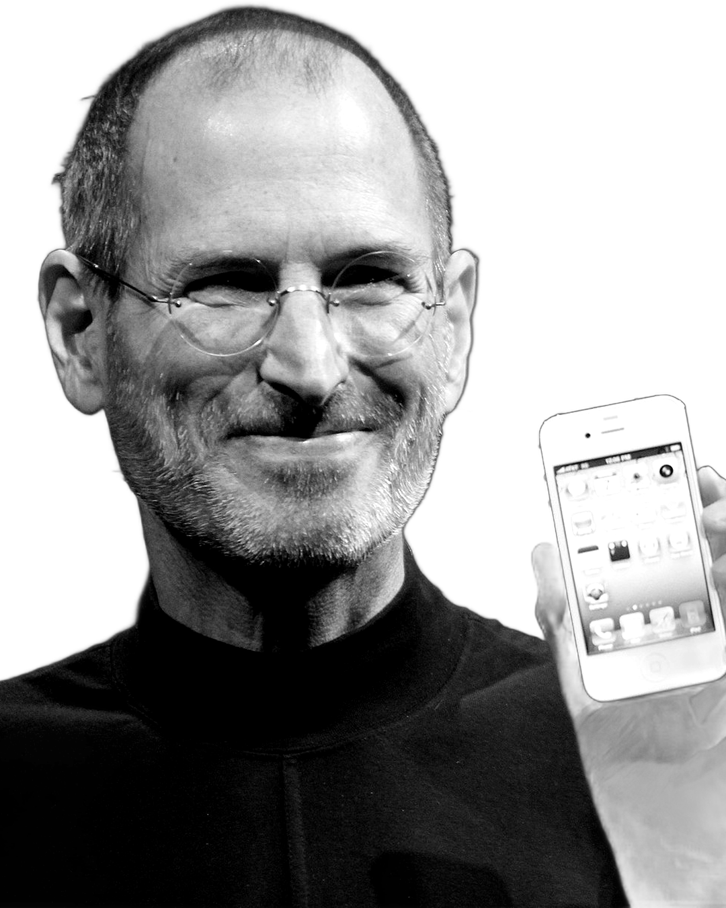
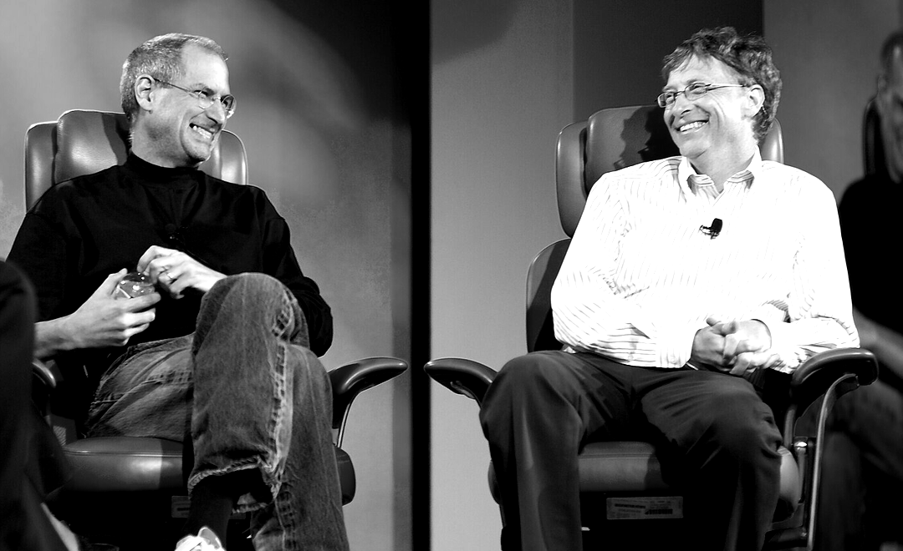

<!doctype html>
<html lang="cs"><head><meta charset="utf-8">
<!-- POSTAVILI TO #01 – Steve Jobs. TikTok/Reels 540×960 CSS px (render 2×), 30 fps, délka podle hlasu (timeline.js).
     Faktický příběh s hlasem z ElevenLabs. Časy vět a titulků generuje voice/timeline.py (timeline.js), scény začínají
     0,06 s před větou. Styl záměrně vybočuje z čistého Better Digital: novinový papír, rastrované fotky, červený akcent,
     Instrument Serif + Anton, VHS glitch na krizi 1997. Důležitý text ve sloupci x 74–466, y 130–740.
     Fakta a zdroje: README.md. Fotky: photos/process.py (Wikimedia Commons, licence a autoři v README). -->
<style>
@font-face{font-family:IT;src:url(../../engine/fonts/InterTight-Variable.ttf);font-weight:100 900}
@font-face{font-family:JB;src:url(../../engine/fonts/jetbrains-mono-latin-ext-500-normal.woff2);unicode-range:U+0100-024F}
@font-face{font-family:JB;src:url(../../engine/fonts/jetbrains-mono-latin-500-normal.woff2);unicode-range:U+0000-00FF}
@font-face{font-family:IS;src:url(../../engine/fonts/instrument-serif-latin-ext-400-normal.woff2);unicode-range:U+0100-024F}
@font-face{font-family:IS;src:url(../../engine/fonts/instrument-serif-latin-400-normal.woff2);unicode-range:U+0000-00FF,U+2013-201E,U+2026}
@font-face{font-family:IS;font-style:italic;src:url(../../engine/fonts/instrument-serif-latin-ext-400-italic.woff2);unicode-range:U+0100-024F}
@font-face{font-family:IS;font-style:italic;src:url(../../engine/fonts/instrument-serif-latin-400-italic.woff2);unicode-range:U+0000-00FF,U+2013-201E,U+2026}
@font-face{font-family:AN;src:url(../../engine/fonts/anton-latin-ext-400-normal.woff2);unicode-range:U+0100-024F}
@font-face{font-family:AN;src:url(../../engine/fonts/anton-latin-400-normal.woff2);unicode-range:U+0000-00FF,U+2013-201E}
:root{--paper:#ECE7DC;--ink:#0E0E0E;--red:#E5322D;--y:#FFD400;--teal:#1C9FAF}
*{margin:0;padding:0;box-sizing:border-box}
html,body{width:540px;height:960px;overflow:hidden;background:#000}
body{font-family:IT,'Noto Color Emoji',sans-serif;-webkit-font-smoothing:antialiased;position:relative;color:var(--ink)}
.abs{position:absolute}
.sc{position:absolute;inset:0;overflow:hidden;display:none}
.cam{position:absolute;inset:0;transform-origin:50% 45%}
.paper{background:var(--paper)}
.paper::before{content:'';position:absolute;inset:0;background:radial-gradient(120% 80% at 30% 20%,rgba(255,255,255,.35),transparent 60%),radial-gradient(90% 70% at 80% 90%,rgba(120,100,60,.12),transparent 70%)}
.ink{background:var(--ink);color:#fff}
.black{background:#000;color:#fff}
.redbg{background:var(--red);color:#fff}
.teal{background:var(--teal);color:#fff}
.white{background:#F7F7F4;color:var(--ink)}
.vhs{background:#120808;color:#fff}
.an{font-family:AN;font-weight:400;letter-spacing:-.005em;line-height:.9;white-space:nowrap}
.is{font-family:IS;font-weight:400;letter-spacing:-.01em;line-height:.95}
.it{font-style:italic}
.mono{font-family:JB,monospace;font-size:13px;letter-spacing:.12em;text-transform:uppercase;white-space:nowrap}
.w60{opacity:.6}
.red{color:var(--red)}
.yel{color:var(--y)}
.white-t{color:#fff}
.stamp{transform:rotate(-8deg)}
.stamp span{display:inline-block;font-family:AN;font-size:78px;color:var(--red);border:7px solid var(--red);padding:2px 18px 0;letter-spacing:.04em;line-height:1.05}
.stamp.sm span{font-size:40px;border-width:4px;padding:0 10px}
.badge{display:inline-flex;align-items:center;gap:10px;background:var(--y);color:var(--ink);font-family:AN;font-size:22px;padding:6px 12px 5px;letter-spacing:.03em}
.badge b{font-family:JB;font-size:12px;font-weight:500;letter-spacing:.1em}
.tape{position:absolute;width:96px;height:26px;background:rgba(240,230,200,.78);box-shadow:0 1px 3px rgba(0,0,0,.15)}
.card{background:#fff;box-shadow:0 14px 34px rgba(0,0,0,.28)}
.screen{border-radius:22px;background:#E9E6DA;box-shadow:inset 0 0 40px rgba(0,0,0,.35),0 0 0 14px #2a2a2a,0 0 0 16px #444,0 30px 60px rgba(0,0,0,.6);overflow:hidden}
.screen::after{content:'';position:absolute;inset:0;background:repeating-linear-gradient(0deg,rgba(0,0,0,.07) 0 1px,transparent 1px 3px);pointer-events:none}
.scan{position:absolute;inset:0;background:repeating-linear-gradient(0deg,rgba(255,255,255,.05) 0 1px,transparent 1px 3px);pointer-events:none}
.credit{font-family:JB;font-size:8.5px;letter-spacing:.06em;opacity:.55;text-transform:uppercase;white-space:nowrap}
.poll div{display:flex;align-items:center;gap:14px;height:58px;padding:0 18px;margin-bottom:10px;background:#fff;border:2.5px solid var(--ink);font-weight:850;font-size:27px;letter-spacing:-.02em}
.poll i{width:22px;height:22px;border:2.5px solid var(--ink);border-radius:50%;display:block;flex:none}
.poll div.on{background:var(--ink);color:#fff}.poll div.on i{background:var(--red);border-color:var(--red)}
.cmt{display:flex;align-items:center;gap:12px;background:#1c1c1e;border:1px solid #38383b;border-radius:30px;padding:10px 10px 10px 14px;height:58px;color:#fff;font-size:19px;font-weight:600}
.cmt .av{width:36px;height:36px;border-radius:50%;background:linear-gradient(135deg,#5a5a5e,#2a2a2c);flex:none}
.cmt .ca{display:inline-block;width:2px;height:21px;background:var(--y);vertical-align:-4px;margin-left:1px}
/* titulky */
#cap{position:absolute;left:40px;right:40px;text-align:center;pointer-events:none}
#cap span{display:inline;background:rgba(14,14,14,.86);color:#fff;font-weight:850;font-size:30px;letter-spacing:-.02em;line-height:1.5;padding:4px 12px;box-decoration-break:clone;-webkit-box-decoration-break:clone;border-radius:4px}
#cap b{font-weight:850;background:var(--red);color:#fff;padding:0 6px;border-radius:3px}
/* časová osa */
#tl{position:absolute;left:74px;width:392px;top:128px;height:30px;pointer-events:none}
#tl .ln{position:absolute;left:0;right:0;top:20px;height:1.5px;background:currentColor;opacity:.35}
#tl .tk{position:absolute;top:16px;width:1.5px;height:9px;background:currentColor;opacity:.45}
#tl .yr{position:absolute;top:0;transform:translateX(-50%);font-family:JB;font-size:11px;letter-spacing:.06em;background:var(--red);color:#fff;padding:1px 5px}
#tl .dot{position:absolute;top:15px;width:11px;height:11px;margin-left:-5.5px;border-radius:50%;background:var(--red)}
#grain{position:absolute;left:0;top:0;width:540px;height:960px;pointer-events:none}
#vig{position:absolute;inset:0;background:radial-gradient(120% 85% at 50% 45%,transparent 55%,rgba(0,0,0,.42) 100%);pointer-events:none}
#flash{position:absolute;inset:0;background:#fff6e0;opacity:0;pointer-events:none}
#leak{position:absolute;inset:-20%;background:radial-gradient(40% 30% at 20% 20%,rgba(255,150,60,.55),transparent 70%);mix-blend-mode:screen;opacity:0;pointer-events:none}
</style></head><body>
<div id="stage"></div>
<div id="tl"></div>
<div id="cap"></div>
<canvas id="grain" width="180" height="320"></canvas>
<div id="vig"></div><div id="leak"></div><div id="flash"></div>
<script src="timeline.js"></script>
<script>
const FPS=30;const clamp=(x,a=0,b=1)=>Math.max(a,Math.min(b,x));
const eo=x=>1-Math.pow(1-clamp(x),3),e5=x=>1-Math.pow(1-clamp(x),5);
const eio=x=>{x=clamp(x);return x<.5?4*x*x*x:1-Math.pow(-2*x+2,3)/2};
const lerp=(a,b,p)=>a+(b-a)*p;const $=id=>document.getElementById(id);
function rng(seed){let a=seed>>>0;return()=>{a|=0;a=a+0x6D2B79F5|0;let t=Math.imul(a^a>>>15,1|a);t=t+Math.imul(t^t>>>7,61|t)^t;return((t^t>>>14)>>>0)/4294967296}}
const fmt=n=>Math.round(n).toString().replace(/\B(?=(\d{3})+(?!\d))/g,' ');
function uzel(h,col){const w=h*3.8,sw=h*.12,r=h/2-sw/2;return `<svg width="${w}" height="${h}" viewBox="0 0 ${w} ${h}" style="overflow:visible;display:block"><circle cx="${h/2}" cy="${h/2}" r="${r}" fill="none" stroke="${col}" stroke-width="${sw}"/><line x1="${h}" y1="${h/2}" x2="${w-h}" y2="${h/2}" stroke="${col}" stroke-width="${sw}"/><circle cx="${w-h/2}" cy="${h/2}" r="${h/2}" fill="#FFD400"/></svg>`}
/* čas z timeline.js */
const T=window.TL;const st=s=>T.S[s][0],en=s=>T.S[s][1];
const CK={};T.chunks.forEach(([s,i,txt,a,b])=>{(CK[s]=CK[s]||[])[i]=[a,b,txt]});
const ck=(s,i)=>CK[s][i][0];
window.DURATION=T.END;
function dust(seed,col='#111',n=40){const r=rng(seed);let s=`<svg class="abs" width="540" height="960" style="left:0;top:0;pointer-events:none">`;
  for(let i=0;i<n;i++)s+=`<circle cx="${(r()*540).toFixed(1)}" cy="${(r()*960).toFixed(1)}" r="${(.4+r()*1.4).toFixed(2)}" fill="${col}" opacity="${(.15+r()*.4).toFixed(2)}"/>`;
  for(let i=0;i<3;i++){const x=r()*540;s+=`<line x1="${x.toFixed(1)}" y1="0" x2="${(x+(r()-.5)*8).toFixed(1)}" y2="960" stroke="${col}" stroke-width=".7" opacity=".07"/>`}
  return s+'</svg>'}
function slamT(u,s0=1.35,amp=7){const p=e5(u/.1),k=Math.exp(-Math.max(0,u)/.13);
  return `translate(${(amp*k*Math.sin(u*97+1.1)).toFixed(2)}px,${(amp*.7*k*Math.sin(u*83+.3)).toFixed(2)}px) scale(${lerp(s0,1,p).toFixed(4)})`}
function rgbSplit(u,d=.16,px=6){const r=u>=0&&u<d?px*(1-u/d):0;return r>0?`${r.toFixed(2)}px 0 rgba(255,40,80,.85),${(-r).toFixed(2)}px 0 rgba(0,210,255,.85)`:'none'}
const show=(e,on)=>{e.style.opacity=on?1:0};

/* ------------------------------------------------------------ scény */
const FONTS=[['IS','normal',400,'Instrument Serif'],['AN','normal',400,'Anton'],['IT','normal',900,'Inter Tight Black'],['JB','normal',500,'JetBrains Mono'],
 ['IS','italic',400,'Instrument Serif Italic'],['DejaVu Serif','normal',700,'DejaVu Serif'],['Latin Modern Roman','normal',400,'Latin Modern'],['Caladea','italic',700,'Caladea'],
 ['IT','normal',200,'Inter Tight Thin'],['FreeSerif','italic',400,'FreeSerif'],['Courier 10 Pitch','normal',400,'Courier'],['Bitstream Charter','normal',700,'Charter'],['Carlito','normal',400,'Carlito'],['IS','normal',400,'Instrument Serif']];
const SCN=[
 {id:'hook',from:'s1',cls:'ink',cap:1,year:1985,html:()=>`${dust(3,'#fff',30)}
   <div class="abs mono w60" style="left:74px;top:184px;color:#fff">Apple · Kalifornie · 1985</div>
   <div class="abs an red" id="h30" style="left:0;right:0;top:214px;text-align:center;font-size:330px;line-height:1">30</div>
   <div class="abs is it" style="left:0;right:0;top:526px;text-align:center;font-size:60px;color:#fff">let</div>
   <div class="abs stamp" id="hst" style="left:0;right:0;top:330px;text-align:center"><span style="background:#0E0E0E;box-shadow:0 10px 30px rgba(0,0,0,.6)">VYHOZEN</span></div>`,
  anim:(t,s)=>{const u=t-s.t0;$('h30').style.transform=`scale(${(1+.05*u/(s.t1-s.t0)).toFixed(4)})`;
    const a=ck('s1',1)-s.t0+.12,e=$('hst');show(e,u>=a);if(u>=a){e.firstElementChild.style.transform=slamT(u-a,1.6,9)}}},
 {id:'name',from:'s2',cls:'redbg',cap:0,year:1955,html:()=>`
   
   <div class="abs" style="left:74px;top:686px"><span class="badge">POSTAVILI TO <b>#01</b></span></div>
   <div class="abs is" id="nnm" style="left:60px;top:178px;font-size:132px;color:#fff;line-height:.82;text-shadow:0 6px 30px rgba(0,0,0,.25)">Steve<br><i>Jobs</i></div>
   <div class="abs mono" style="left:66px;top:404px;color:#fff;opacity:.9">1955 — 2011</div>
   <div class="abs credit" style="right:12px;top:470px;color:#fff;transform:rotate(-90deg);transform-origin:100% 0">Foto: Matthew Yohe · CC BY-SA 3.0</div>`,
  anim:(t,s)=>{const u=t-s.t0,d=s.t1-s.t0;$('nimg').style.transform=`scale(${(1.04+.06*u/Math.max(d,1)).toFixed(4)})`;
    const p=e5(u/.35);$('nnm').style.transform=`translateY(${(30*(1-p)).toFixed(1)}px)`;$('nnm').style.opacity=p}},
 {id:'reed',from:'s3',cls:'paper',cap:1,year:1972,html:()=>`${dust(5)}
   <div class="abs mono" style="left:74px;top:184px">Reed College · Portland · 1972</div>
   <div class="abs is" style="left:70px;top:222px;font-size:118px;line-height:.86">1<br><i>semestr</i></div>
   <div class="abs" id="cal" style="left:74px;top:470px;width:392px;display:grid;grid-template-columns:repeat(6,1fr);gap:8px">
     ${[1,2,3,4,5,6].map(m=>`<div style="height:84px;border:2px solid var(--ink);position:relative;background:rgba(255,255,255,.5)"><div class="mono" style="font-size:10px;letter-spacing:.05em;padding:6px 0 0 6px">${m}. měs.</div><svg class="abs x" width="58" height="84" viewBox="0 0 58 84" style="left:0;top:0"><path d="M8 14 L50 72 M50 14 L8 72" stroke="#E5322D" stroke-width="5" stroke-linecap="round" fill="none" pathLength="1" stroke-dasharray="1 1" stroke-dashoffset="1"/></svg></div>`).join('')}
   </div>
   <div class="abs stamp sm" id="rst" style="left:290px;top:572px"><span>ODEŠEL</span></div>`,
  anim:(t,s)=>{const u=t-s.t0,d=s.t1-s.t0;const xs=s.el.querySelectorAll('#cal path');xs.forEach((p,i)=>{const a=.15+i*(d*.55/6);p.style.strokeDashoffset=(1-e5((u-a)/.18)).toFixed(3)});
    const a=ck('s3',1)-s.t0,e=$('rst');show(e,u>=a);if(u>=a)e.firstElementChild.style.transform=slamT(u-a,1.5,5)}},
 {id:'calli',from:'s4',cls:'paper',cap:1,year:1972,html:()=>`${dust(7)}
   <div class="abs mono" style="left:74px;top:184px">Kurz kaligrafie</div>
   <svg class="abs" width="540" height="300" style="left:0;top:270px"><text id="ctx" x="270" y="170" text-anchor="middle" style="font-family:IS;font-style:italic;font-size:112px" fill="#0E0E0E" fill-opacity="0" stroke="#0E0E0E" stroke-width="1.4" stroke-dasharray="2600" stroke-dashoffset="2600">kaligrafie</text>
     <path id="cnib" d="M60 205 C 170 228, 360 222, 480 200" stroke="#E5322D" stroke-width="5" fill="none" stroke-linecap="round" pathLength="1" stroke-dasharray="1 1" stroke-dashoffset="1"/></svg>
   <div class="abs" id="cdrops"></div>`,
  init:s=>{const r=rng(9);s.el.querySelector('#cdrops').innerHTML=Array.from({length:9},()=>`<i class="abs" style="left:${(90+r()*360).toFixed(0)}px;top:${(470+r()*90).toFixed(0)}px;width:${(3+r()*7).toFixed(1)}px;height:${(3+r()*7).toFixed(1)}px;border-radius:50%;background:#0E0E0E;opacity:${(.5+r()*.5).toFixed(2)}"></i>`).join('')},
  anim:(t,s)=>{const u=t-s.t0,d=s.t1-s.t0;const p=eio(u/(d*.7));const tx=$('ctx');tx.style.strokeDashoffset=(2600*(1-p)).toFixed(1);tx.style.fillOpacity=clamp((u-d*.55)/.35).toFixed(3);
    $('cnib').style.strokeDashoffset=(1-eo((u-d*.6)/.3)).toFixed(3);s.el.querySelector('#cdrops').style.opacity=clamp((u-d*.5)/.2)}},
 {id:'fonts',from:'s5',cls:'ink',cap:1,year:1984,html:()=>`${dust(11,'#fff',25)}
   <div class="abs screen" style="left:76px;top:212px;width:388px;height:290px"><div id="fw" style="position:absolute;left:0;right:0;top:70px;text-align:center;font-size:96px;line-height:1.2;color:#151515">písma</div>
     <div id="fn" class="mono" style="position:absolute;left:0;right:0;bottom:24px;text-align:center;font-size:11px;color:#555">Instrument Serif</div></div>
   <div class="abs mono w60" style="left:74px;top:540px;color:#fff">Macintosh · 1984</div>`,
  anim:(t,s)=>{const u=t-s.t0;const k=Math.floor(Math.pow(Math.max(0,u),1.25)*7.5)%FONTS.length;const [f,sty,w,nm]=FONTS[k];
    const e=$('fw');e.style.fontFamily=`${f.length<3?f:`'${f}'`}, serif`;e.style.fontStyle=sty;e.style.fontWeight=w;$('fn').textContent=nm}},
 {id:'garage',from:'s6',cls:'paper',cap:1,year:1976,html:()=>`${dust(13)}
   <div class="abs an" id="g76" style="left:0;right:0;top:160px;text-align:center;font-size:200px">1976</div>
   <div class="abs" id="gph" style="left:98px;top:366px;width:344px;transform:rotate(-3deg)">
     <i class="tape" style="left:-24px;top:10px;transform:rotate(-30deg)"></i><i class="tape" style="right:-24px;top:10px;transform:rotate(28deg)"></i></div>
   <div class="abs mono" id="glab" style="left:74px;top:358px">Garáž · Los Altos, Kalifornie</div>
   <div class="abs mono" id="gwoz" style="left:74px;top:378px;color:var(--red)">Steve Jobs &amp; Steve Wozniak</div>
   <div class="abs credit" style="left:98px;top:636px">Foto Apple I: Ed Uthman · CC BY-SA 2.0</div>`,
  anim:(t,s)=>{const u=t-s.t0;const p=e5(u/.3);$('g76').style.transform=`scale(${lerp(1.25,1,p).toFixed(4)})`;$('g76').style.opacity=p;
    const a=.25,e=$('gph');e.style.transform=`rotate(-3deg) translateY(${(40*(1-e5((u-a)/.4))).toFixed(1)}px) scale(${(1+.03*u/4).toFixed(4)})`;e.style.opacity=clamp((u-a)/.15);
    show($('gwoz'),t>=ck('s6',2)-.05)}},
 {id:'money',from:'s7',cls:'ink',cap:1,year:1985,html:()=>`${dust(17,'#fff',25)}
   <svg class="abs" width="540" height="420" style="left:0;top:180px"><path id="mch" d="M74 360 C 150 350, 190 330, 240 300 S 330 200, 380 150 S 440 60, 466 40" stroke="#FFD400" stroke-width="5" fill="none" stroke-linecap="round" pathLength="1" stroke-dasharray="1 1" stroke-dashoffset="1"/>
     <line x1="74" y1="380" x2="466" y2="380" stroke="#fff" stroke-opacity=".3" stroke-width="1.5"/></svg>
   <div class="abs mono w60" style="left:74px;top:570px;color:#fff">1976</div><div class="abs mono w60" style="right:74px;top:570px;color:#fff">1985</div>
   <div class="abs an yel" id="mcnt" style="left:0;right:0;top:190px;text-align:center;font-size:72px">$0</div>
   <div class="abs mono" id="memp" style="left:0;right:0;top:272px;text-align:center;color:#fff">4 000+ zaměstnanců</div>`,
  anim:(t,s)=>{const u=t-s.t0,d=s.t1-s.t0;$('mch').style.strokeDashoffset=(1-eio(u/(d*.8))).toFixed(4);
    const a=ck('s7',2)-s.t0,p=eo((u-a+.1)/.9);$('mcnt').textContent='$'+fmt(2e9*p);show($('memp'),u>=a+.5)}},
 {id:'fired',from:'s8',cls:'black',cap:1,year:1985,html:()=>`<div class="scan"></div>
   <div class="abs mono w60" style="left:0;right:0;top:250px;text-align:center;color:#fff">1985</div>
   <div class="abs stamp" id="fst" style="left:0;right:0;top:330px;text-align:center;transform:rotate(-10deg)"><span style="font-size:96px">VYHOZEN</span></div>`,
  anim:(t,s)=>{const u=t-s.t0,a=ck('s8',1)-s.t0+.08,e=$('fst');show(e,u>=a);
    if(u>=a){e.firstElementChild.style.transform=slamT(u-a,1.8,12);e.firstElementChild.style.textShadow=rgbSplit(u-a,.25,8)}}},
 {id:'nevzdal',from:'s9',cls:'paper',cap:0,year:1985,html:()=>`${dust(19)}
   <div class="abs is it" id="nv" style="left:0;right:0;top:300px;text-align:center;font-size:140px">Nevzdal<br>to.</div>
   <svg class="abs" width="540" height="60" style="left:0;top:560px"><path id="nvu" d="M120 30 C 220 14, 330 18, 430 26" stroke="#E5322D" stroke-width="9" fill="none" stroke-linecap="round" pathLength="1" stroke-dasharray="1 1" stroke-dashoffset="1"/></svg>`,
  anim:(t,s)=>{const u=t-s.t0;const p=e5(u/.25);$('nv').style.transform=`scale(${lerp(1.12,1,p).toFixed(4)})`;$('nvu').style.strokeDashoffset=(1-eo((u-.15)/.35)).toFixed(3)}},
 {id:'next',from:'s10',cls:'paper',cap:1,year:1986,html:()=>`${dust(23)}
   <div class="abs" id="xcube" style="left:50px;top:186px;width:250px;transform:rotate(3deg)"></div>
   <div class="abs an" id="xnext" style="left:318px;top:236px;font-size:66px">NeXT</div>
   <div class="abs mono" id="xnext2" style="left:322px;top:302px">1985</div>
   <div class="abs credit" style="left:56px;top:446px">Foto: Rama · CC BY-SA 2.0 FR</div>
   <div class="abs card" id="xpix" style="left:150px;top:420px;width:300px;padding:18px 20px 16px;transform:rotate(-4deg)"><div class="an" style="font-size:84px">PIXAR</div><div class="mono" style="margin-top:8px;color:var(--red)">1986 · 10 mil. $</div><i class="tape" style="left:100px;top:-14px;transform:rotate(-3deg)"></i></div>`,
  anim:(t,s)=>{const u=t-s.t0;const p=e5(u/.35);$('xcube').style.transform=`rotate(3deg) translateY(${(-40*(1-p)).toFixed(1)}px)`;$('xcube').style.opacity=p;
    show($('xnext'),u>=.1);show($('xnext2'),u>=.2);const a=ck('s10',3)-s.t0,e=$('xpix');show(e,u>=a);if(u>=a)e.style.transform='rotate(-4deg) '+slamT(u-a,1.3,5)}},
 {id:'toy',from:'s11',cls:'ink',cap:0,year:1995,html:()=>`
   <div class="abs" style="left:-30%;right:-30%;top:470px;height:700px;transform:perspective(380px) rotateX(62deg);transform-origin:50% 0"><div id="grid" style="position:absolute;inset:-200px 0 0 0;background:linear-gradient(rgba(255,212,0,.55) 1.5px,transparent 1.5px) 0 0/60px 60px,linear-gradient(90deg,rgba(255,212,0,.55) 1.5px,transparent 1.5px) 0 0/60px 60px"></div></div>
   ${['left:10px','right:10px'].map(p=>`<div class="abs" style="${p};top:0;bottom:0;width:30px;background:#1b1b1b"><div class="tf" style="position:absolute;inset:-60px 0;background:repeating-linear-gradient(0deg,transparent 0 14px,#ECE7DC 14px 28px);background-size:12px 28px;background-repeat:repeat-y;background-position:9px 0"></div></div>`).join('')}
   <div class="abs an" id="tts" style="left:0;right:0;top:214px;text-align:center;font-size:104px;color:#fff">TOY STORY</div>
   <div class="abs an red" style="left:0;right:0;top:318px;text-align:center;font-size:62px">1995</div>
   <div class="abs is it" id="tt2" style="left:60px;right:60px;top:410px;text-align:center;font-size:44px;color:#fff;line-height:1.05">první celovečerák<br>celý z počítače</div>`,
  anim:(t,s)=>{const u=t-s.t0;$('grid').style.transform=`translateY(${((u*60)%60).toFixed(1)}px)`;s.el.querySelectorAll('.tf').forEach(e=>e.style.transform=`translateY(${((u*80)%28).toFixed(1)}px)`);
    const a=ck('s11',1)-s.t0;const p=e5((u-a)/.3);$('tts').style.opacity=clamp((u-a)/.08);$('tts').style.transform=`scale(${lerp(1.3,1,p).toFixed(4)})`;
    show($('tt2'),t>=ck('s11',2)-.05)}},
 {id:'crisis',from:'s12',cls:'vhs',cap:1,year:1997,html:()=>`<div class="scan"></div>
   <div class="abs mono" style="left:74px;top:178px;color:#fff">▶ Play</div><div class="abs mono" style="right:74px;top:178px;color:#fff">● Rec</div>
   <svg class="abs" width="540" height="420" style="left:0;top:200px"><path id="crc" d="M74 60 L120 90 L150 70 L200 150 L240 130 L290 230 L330 210 L380 320 L420 300 L466 390" stroke="#E5322D" stroke-width="5" fill="none" stroke-linejoin="round" pathLength="1" stroke-dasharray="1 1" stroke-dashoffset="1"/></svg>
   <div class="abs an" id="c97" style="left:0;right:0;top:240px;text-align:center;font-size:200px;color:#fff">1997</div>
   <div class="abs" id="ctape" style="left:-40px;right:-40px;top:470px;height:64px;background:repeating-linear-gradient(-45deg,#FFD400 0 26px,#0E0E0E 26px 52px);transform:rotate(-6deg);display:flex;align-items:center;justify-content:center"><span class="an" style="background:#FFD400;color:#0E0E0E;font-size:36px;padding:2px 14px">NA POKRAJI BANKROTU</span></div>
   <div class="abs mono w60" style="left:74px;top:600px;color:#fff">Oct 06 1997</div>`,
  anim:(t,s)=>{const u=t-s.t0,d=s.t1-s.t0;$('crc').style.strokeDashoffset=(1-eio(u/(d*.8))).toFixed(4);
    const g=Math.sin(u*31)*Math.sin(u*7.3);const j=Math.abs(g)>.75?6:1.5;$('c97').style.textShadow=`${j}px 0 rgba(255,40,80,.9),${-j}px 0 rgba(0,210,255,.9)`;
    $('c97').style.transform=`translateX(${(Math.abs(g)>.85?(g>0?8:-8):0)}px)`;
    const a=ck('s12',3)-s.t0,e=$('ctape');show(e,u>=a);if(u>=a)e.style.transform=`rotate(-6deg) scaleX(${e5((u-a)/.25).toFixed(4)})`}},
 {id:'dell',from:'s13',cls:'paper',cap:0,year:1997,html:()=>`${dust(29)}
   <div class="abs is red" style="left:392px;top:150px;font-size:190px;line-height:1">“</div>
   <div class="abs an" id="dnm" style="left:74px;top:220px;font-size:44px">MICHAEL DELL</div>
   <div class="abs mono" style="left:74px;top:272px;color:var(--red)">6. října 1997</div>
   <div class="abs is it" id="dq" style="left:70px;width:410px;top:372px;font-size:54px;line-height:1.02"><span id="dq1">Zavřel bych to</span> <span id="dq2">a peníze vrátil</span> <span id="dq3">akcionářům.“</span></div>
   <div class="abs mono w60" id="dsrc" style="left:74px;top:620px">Michael Dell o Applu, 1997</div>`,
  anim:(t,s)=>{const u=t-s.t0;show($('dq1'),t>=ck('s13',2)-.05);show($('dq2'),t>=ck('s13',3)-.05);show($('dq3'),t>=ck('s13',4)-.05);show($('dsrc'),t>=ck('s13',4)+.2);
    $('dnm').style.transform=`translateX(${(-30*(1-e5(u/.3))).toFixed(1)}px)`}},
 {id:'imac',from:'s14',cls:'teal',cap:0,year:1998,html:()=>`<div class="abs mono" style="left:0;right:0;top:250px;text-align:center;color:#fff">Pak přišel</div><div class="abs an" id="pw1" style="left:0;right:0;top:300px;text-align:center;font-size:200px;color:#fff">iMac</div><div class="abs an" style="left:0;right:0;top:500px;text-align:center;font-size:56px;color:#0E0E0E">1998</div>`,
  anim:(t,s)=>{const a=ck('s14',1)-s.t0,u=t-s.t0,e=$('pw1');show(e,u>=a);if(u>=a)e.style.transform=slamT(u-a,1.4,6)}},
 {id:'ipod',from:'s15',cls:'white',cap:0,year:2001,html:()=>`<div class="abs an" id="pw2" style="left:0;right:0;top:300px;text-align:center;font-size:200px">iPod</div><div class="abs an red" style="left:0;right:0;top:500px;text-align:center;font-size:56px">2001</div>`,
  anim:(t,s)=>{const u=t-s.t0;$('pw2').style.transform=slamT(u,1.4,6)}},
 {id:'iphone',from:'s16',cls:'black',cap:0,year:2007,html:()=>`<div class="abs an" id="pw3" style="left:0;right:0;top:300px;text-align:center;font-size:150px;color:#fff">iPhone</div><div class="abs an yel" style="left:0;right:0;top:500px;text-align:center;font-size:56px">2007</div>`,
  anim:(t,s)=>{const u=t-s.t0;$('pw3').style.transform=slamT(u,1.4,6)}},
 {id:'top',from:'s17',cls:'ink',cap:1,year:2011,html:()=>`${dust(31,'#fff',25)}
   <svg class="abs" width="540" height="440" style="left:0;top:170px"><path id="tch" d="M74 400 L140 380 L190 350 L240 320 L280 250 L330 200 L370 150 L410 90 L466 30" stroke="#FFD400" stroke-width="5" fill="none" stroke-linejoin="round" pathLength="1" stroke-dasharray="1 1" stroke-dashoffset="1"/></svg>
   <div class="abs an" id="t0" style="left:0;right:0;top:250px;text-align:center;font-size:96px;line-height:1;color:#fff">SRPEN<br>2011</div>
   <div class="abs an yel" id="t1" style="left:0;right:0;top:190px;text-align:center;font-size:250px;line-height:1">#1</div>
   <div class="abs mono" id="tlab" style="left:0;right:0;top:450px;text-align:center;color:#fff">Nejhodnotnější firma světa</div>
   <div class="abs an" id="tval" style="left:0;right:0;top:478px;text-align:center;font-size:58px;color:#fff">337 mld. $</div>
   <div class="abs mono w60" style="left:0;right:0;top:552px;text-align:center;color:#fff">9. srpna 2011 · Bloomberg</div>`,
  anim:(t,s)=>{const u=t-s.t0,d=s.t1-s.t0;$('tch').style.strokeDashoffset=(1-eio(u/(d*.6))).toFixed(4);
    const a=ck('s17',2)-s.t0,e=$('t1');show(e,u>=a);const z=$('t0');z.style.opacity=(e5(u/.25)*(1-clamp((u-a+.08)/.08))).toFixed(3);z.style.transform=`scale(${lerp(1.15,1,e5(u/.3)).toFixed(4)})`;if(u>=a)e.style.transform=slamT(u-a,1.5,8);$('tch').style.opacity=(1-.65*clamp((u-a)/.3)).toFixed(3);
    show($('tlab'),u>=a+.2);const p=eo((u-a-.2)/.7);$('tval').textContent=fmt(337*p)+' mld. $';show($('tval'),u>=a+.2)}},
 {id:'death',from:'s18',cls:'black',cap:1,year:2011,html:()=>`
   
   <div class="abs" style="left:0;right:0;top:500px;height:300px;background:linear-gradient(transparent,#000 70%)"></div>
   <div class="abs is" id="dyr" style="left:0;right:0;top:520px;text-align:center;font-size:64px;color:#fff">1955 — 2011</div>`,
  anim:(t,s)=>{const u=t-s.t0,d=s.t1-s.t0;$('dimg').style.opacity=(.62*eio(u/1.2)).toFixed(3);$('dimg').style.transform=`scale(${(1.02+.04*u/Math.max(d,1)).toFixed(4)})`;
    $('dyr').style.opacity=eio((u-.5)/.8).toFixed(3)}},
 {id:'quote',from:'s19',cls:'paper',cap:0,year:2005,html:()=>`${dust(37)}
   <div class="abs is red" style="left:58px;top:170px;font-size:190px;line-height:1">“</div>
   <div class="abs is it" id="qq" style="left:70px;width:410px;top:300px;font-size:52px;line-height:1.04">Vyhazov z Applu byl to nejlepší, co se mi mohlo stát.“</div>
   <div class="abs mono" id="qs" style="left:74px;top:590px">Steve Jobs · Stanford, 2005</div>`,
  anim:(t,s)=>{const u=t-s.t0,d=s.t1-s.t0;const p=e5(u/.5);$('qq').style.transform=`translateY(${(24*(1-p)).toFixed(1)}px)`;$('qq').style.opacity=p;show($('qs'),u>=.6)}},
 {id:'hungry',from:'s20',cls:'black',cap:0,year:2005,html:()=>`
   <div class="abs is" id="hg1" style="left:0;right:0;top:280px;text-align:center;font-size:96px;color:#fff">Stay hungry.</div>
   <div class="abs is it red" id="hg2" style="left:0;right:0;top:390px;text-align:center;font-size:96px">Stay foolish.</div>
   <div class="abs mono w60" id="hg3" style="left:0;right:0;top:520px;text-align:center;color:#fff">Zůstaň hladový. Zůstaň pošetilý.</div>`,
  anim:(t,s)=>{const u=t-s.t0;const p=e5(u/.4);$('hg1').style.opacity=p;$('hg1').style.transform=`translateY(${(20*(1-p)).toFixed(1)}px)`;
    const a=st('s21')-.05-s.t0,q=e5((u-a)/.4);$('hg2').style.opacity=u>=a?q:0;$('hg2').style.transform=`translateY(${(20*(1-q)).toFixed(1)}px)`;$('hg3').style.opacity=clamp((u-a-.3)/.4)}},
 {id:'nextep',from:'s22',cls:'paper',cap:0,year:0,html:()=>`${dust(41)}
   <div class="abs" style="left:0;top:96px;width:540px;height:330px;overflow:hidden"></div>
   <div class="abs credit" style="left:14px;top:432px">Jobs a Gates, 2007 · Foto: Joi Ito · CC BY 2.0</div>
   <div class="abs is" id="ngq" style="left:70px;width:410px;top:452px;font-size:50px;line-height:1">Koho chceš v <i>dalším díle?</i></div>
   <div class="abs poll" id="npoll" style="left:74px;width:392px;top:568px"><div><i></i>Bill Gates</div><div><i></i>Steve Wozniak</div><div><i></i>Elon Musk</div></div>`,
  anim:(t,s)=>{const u=t-s.t0;$('ngimg').style.transform=`scale(${(1.02+.03*u/3).toFixed(4)})`;const rows=s.el.querySelectorAll('#npoll>div');
    rows.forEach((r,i)=>{const a=ck('s23',i)-.05;r.classList.toggle('on',t>=a&&(i==2||t<ck('s23',i+1)-.05));r.style.opacity=clamp((u-.2-i*.12)/.15)})}},
 {id:'cta',from:'s24',cls:'ink',cap:0,year:0,html:()=>`${dust(43,'#fff',25)}
   <div class="abs" style="left:74px;top:176px"><span class="badge">POSTAVILI TO <b>#01 · STEVE JOBS</b></span></div>
   <div class="abs" style="left:74px;width:392px;top:300px;font-weight:850;font-size:50px;letter-spacing:-.035em;line-height:1.02;color:#fff;white-space:nowrap">Napiš to<br>do komentářů 👇</div>
   <div class="abs cmt" id="ccm" style="left:58px;width:424px;top:470px"><div class="av"></div><div><span id="cty"></span><span class="ca"></span></div></div>
   <div class="abs" style="left:0;right:0;top:640px;display:flex;justify-content:center;align-items:center;gap:10px;color:#fff;font-size:16px;font-weight:800">— ${uzel(15,'#fff')}<span>Better Digital</span></div>`,
  anim:(t,s)=>{const u=t-s.t0;const txt=Array.from('Bill Gates! 🙌');const k=clamp(Math.floor((u-.5)*14)+1,0,txt.length);$('cty').textContent=txt.slice(0,k).join('')}},
];
/* ------------------------------------------------------------ sestavení */
const stage=$('stage');
SCN.forEach((s,i)=>{s.t0=i?st(s.from)-.06:0;});
SCN.forEach((s,i)=>{s.t1=i+1<SCN.length?SCN[i+1].t0:T.END;const el=document.createElement('div');el.className='sc '+s.cls;el.id='sc_'+s.id;
  el.innerHTML=`<div class="cam">${s.html()}</div>`;stage.appendChild(el);s.el=el;s.cam=el.querySelector('.cam');if(s.init)s.init(s)});
const Y0=1955,Y1=2011,yx=y=>(y-Y0)/(Y1-Y0)*392;
$('tl').innerHTML='<div class="ln"></div>'+[1955,1976,1985,1997,2011].map(y=>`<div class="tk" style="left:${yx(y).toFixed(1)}px"></div>`).join('')+'<div class="dot"></div><div class="yr"></div>';
const GC=$('grain').getContext('2d'),GI=GC.createImageData(180,320);
function grain(f){const r=rng(7000+f),d=GI.data;for(let i=0;i<d.length;i+=4){const v=r()*255|0;d[i]=d[i+1]=d[i+2]=v;d[i+3]=26}GC.putImageData(GI,0,0)}
let CUR=null;
window.render=function(t){
  let k=SCN.length-1;for(let i=0;i<SCN.length;i++)if(t<SCN[i].t1){k=i;break}
  const s=SCN[k];if(CUR!==s){if(CUR)CUR.el.style.display='none';s.el.style.display='block';CUR=s}
  const u=t-s.t0,d=s.t1-s.t0;s.cam.style.transform=`scale(${(1+.025*u/Math.max(d,.5)).toFixed(4)})`;
  s.anim&&s.anim(t,s);
  /* titulky */
  const cap=$('cap');let html='';if(s.cap){for(const [sid,i,txt,a,b] of T.chunks){if(t>=a-(sid==='s1'&&i===0?1:0)&&t<b+.02&&t>=s.t0-.01){html=txt.replace(/\*(.+?)\*/g,'<b>$1</b>');break}}}
  cap.innerHTML=html?`<span>${html}</span>`:'';cap.style.top=(s.capY||664)+'px';
  /* časová osa: rok scény, přechod 0,35 s */
  const tl=$('tl');const prev=k>0?SCN[k-1].year:s.year;const yy=s.year?lerp(prev||s.year,s.year,eio(u/.35)):0;tl.style.opacity=s.year?1:0;
  tl.style.color=['paper','white'].includes(s.cls)?'#0E0E0E':'#fff';
  if(s.year){tl.querySelector('.dot').style.left=yx(yy).toFixed(1)+'px';const yr=tl.querySelector('.yr');yr.style.left=yx(yy).toFixed(1)+'px';yr.textContent=Math.round(yy)}
  /* záblesk na střihu, světelný průsak */
  $('flash').style.opacity=(u<.1&&k>0?.22*(1-u/.1):0).toFixed(3);
  $('leak').style.opacity=(['name','top','hungry'].includes(s.id)?.35+.2*Math.sin(t*1.3):.12).toFixed(3);$('leak').style.transform=`translate(${(Math.sin(t*.4)*40).toFixed(1)}px,${(Math.cos(t*.3)*30).toFixed(1)}px)`;
  grain(Math.floor(t*FPS+1e-6));
};
const FL=['400 20px IS','italic 400 20px IS','400 20px AN','850 20px IT','900 20px IT','200 20px IT','20px JB'];
Promise.all(FL.map(f=>document.fonts.load(f,'ěščřžýáíéúůĚŠČŘŽ„“…—·')))
 .then(()=>Promise.all([...document.images].map(i=>i.complete?1:new Promise(r=>{i.onload=i.onerror=r}))))
 .then(()=>document.fonts.ready).then(()=>{window.READY=true;render(0)});
</script></body></html>
